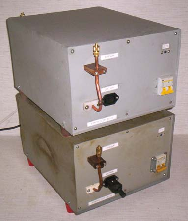
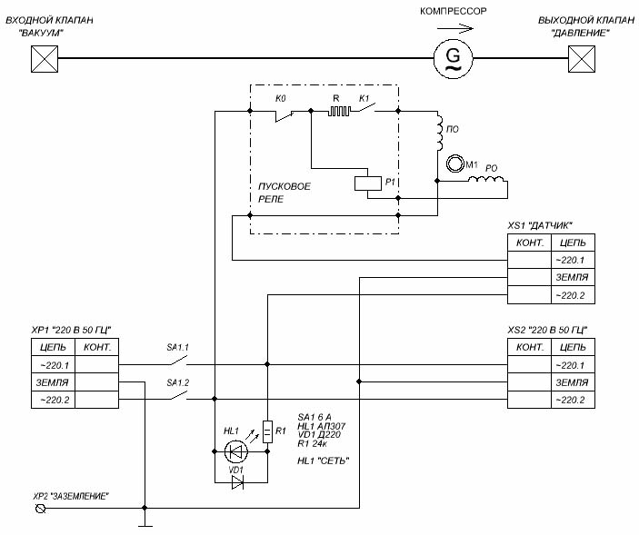
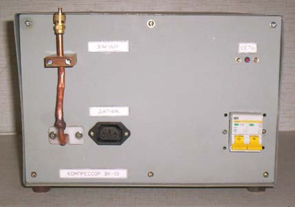
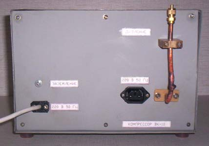
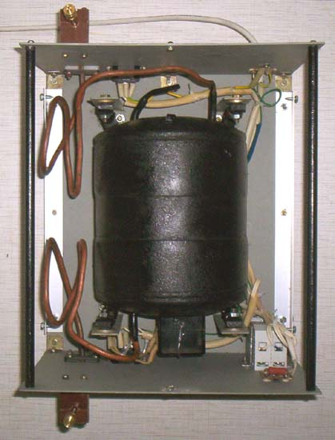

Компрессорный блок рефрижераторной системы (вакуумирующий насос)

Назначение
Компрессорный блок представляет из себя автономное устройство. Он имеет универсальное применение и может использоваться как для построения рефрижераторных систем в различной конфигурации, так и для их предварительного вакуумирования перед заправкой хладагентом, а также может выполнять функцию форвакуумного насоса при проведении физических опытов или технологических операций или для предварительной откачки воздуха из вакуумных систем.
Характеристики:
Конструкция и принцип работы
На основании корпуса компрессорного блока на амортизаторах установлен холодильный компрессор с пусковым реле. От компрессора на переднюю и заднюю панель выведены входной и выходной патрубки с клапанами Шредера. На передней панели имеется автоматический выключатель сетевого напряжения и разъем для подключения датчика давления или температуры или контроллера холодильной установки [2]. На задней панели имеется розетка 220 В 50 Гц для подключения дополнительных блоков и клемма заземления. Электрическая принципиальная схема компрессорного блока приведена на рис. 1.

Рис. 1. Схема электрическая принципиальная компрессорного блока.
Входное напряжение 220 В от сетевой вилки с кабелем XP1 поступает на автоматический выключатель SA1, служащий для защиты от короткого замыкания. Для контроля включения компрессорного блока служит цепь HL1VD1R1. Светодиод HL1 "СЕТЬ" загорается при включении автомата SA1. Выходной разъем XS2 используется для питания внешних устройств. К разъему XS1 "ДАТЧИК" подключается датчик с нормально замкнутыми контактами или перемычка, если компрессорный блок используется для непрерывной работы. Мотор компрессора подключается через пусковое реле, которое подает напряжение на пусковую обмотку (ПО) мотора на время его раскрутки и защищает рабочую обмотку (РО) от перегрева при аварийных режимах работы.
Внешний вид компрессорного блока показан на рис. 2 - 4.

Рис. 2. Компрессорный блок. Вид спереди.

Рис. 3. Компрессорный блок. Вид сзади.

Рис. 4. Компрессорный блок. Вид сверху со снятым кожухом.
Состояние разработки
Компрессорный блок используется для построения различных экспериментальных охлаждающих систем, для их предварительного вакуумирования перед закачкой хладоносителя, а также для проведения физических опытов в вакууме с использованием столика с вакуумным колпаком [3].
Ссылки:
28.04.2015
04.11.2015
Альтернативные источники
энергии
Компьютеры и
Интернет
Магнитные поля
Механотронные системы
Перспективные
разработки
Электроника и
технология